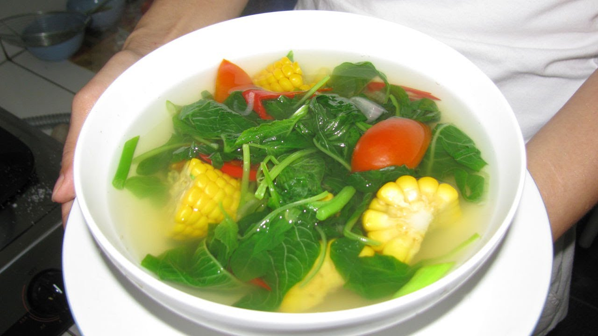

15 Resep Masakan Sederhana & Praktis Sehari-Hari | Resepkoki.co
2021.03.24 18:32
302 Shares Share Pin Home Belanja Yuk! Instagram Resep Ayam Daging Telur Mie Menu Anak Menu Rumahan Lezat & Praktis Ikan & Seafood Sayur Sambal Kue & Puding Tahu & Tempe Resep Selera Nusantara Resep Masakan Khas Langganan Resep Kirim Resep
🔥 Oven Fantasy Best Seller Ready Stock 👇
😍 Paket Produk #DirumaAja
Cari Resep & Artikel disini
Resep & Artikel Terbaru
Choco Oreo Mousse Puding Oreo and Cheese Dessert Cup Resep Oreo Balls Bola Oreo Honey Chicken Wings Spicy BBQ Kue Apem Selong NangkaResep Populer
15 Resep Masakan Sederhana & Praktis Sehari-Hari Spesial: Resep & Menu Masakan Sehari-hari Untuk 1 Bulan Quaker Oat Enaknya Dimasak Apa? 24 Ide Resep Quaker Oat Yang Enak dan Sehat 30 + 56 Menu Resep Praktis Untuk Berbuka Puasa 10 Resep Praktis Untuk Anak Usia 1-2 Tahun15 Resep Masakan Sederhana & Praktis Sehari-Hari
1 COMMENT 302 SharesSering bingung masak apa tiap hari? Yukkk Berlangganan Resep di Resepkoki.co (klik) untuk mendapatkan tips & resep masakan mudah, dan praktis lewat email
Daftar resep masakan sederhana yang praktis dan enak adalah hal yang wajib dipunyai oleh ibu-ibu di rumah agar tidak kebingungan mau masak apa.
Mau belanja alat dapur? Klik www.Dapurnesia.com lebih nyaman, praktis, dan hemat!
Jika Anda seorang ibu rumah tangga atau seorang pekerja, pasti Anda kerepotan jika harus memasak untuk keluarga setiap hari bukan? Jangan khawatir, karena Resep Koki akan membagikan resep-resep masakan sederhana dan praktis untuk Anda yang tidak mempunyai banyak waktu untuk memasak.
Untuk resep lengkapnya Anda bisa klik judul disetiap masakan berikut ini;
1. Resep Tumis Labu Siam
Tumis labu siam adalah masakan yang sering disajikan dirumah-rumah, Anda bisa menyantapnya dengan sepiring nasi putih hangat. Cara memasaknya sangat gampang dan bahannya juga murah dan mudah didapat.
2. Resep Capcay Goreng Bakso
Ingin menikmati berbagai macam sayuran dalam satu piring? Capcay goreng bakso bisa dijadikan menu piliha Anda. Sayur-sayuran sangat baik untuk kesehan Anda dan kelezatan bakso juga bisa Anda nikmati.
3. Resep Tumis Kangkung
Tumis kangkung adalah masakan yang murah meriah tetapi kelezatannya tidak diragukan lagi. Hanya dengan Rp. 5000,- Tumis kangkung bisa Anda sajikan untuk keluarga.
4. Resep Terong Balado
Satu buah terong ungu bisa Anda olah dengan kelezatan yang oke punya. Bumbunya hanya bawang merah, bawah putih, cabe rawit, cabe merah,tomat garam dan gula. Terong balado siap disajikan untuk orang terkasih.
5. Resep Sayur Asem
Sayur asem khas Jawa Timur ini pastinya tidak asing untuk Anda, bahan-bahannya tergolong mudah dan tidak sulit didapat. Memasaknyapun cukup praktis.
6. Resep Tahu Goreng Saus Sambal ABC
Dengan bahan utama tahu Anda akan menyajikan makanan yang istimewa. Sepotong tahu diisikan daging cincang didalamnya lalu saus sambal ABC sebagai pelengkap dalam sajian yang lezat ini.
7. Resep Udang Goreng Tepung
Olahan seafood yang satu ini sangatlah gampang mengolahnya, Anda hanya perlu 200 gram udang tanpa kepala dan tepung bumbu. Udang goreng tepung sudah siap disajikan di meja makan Anda
8. Resep Sambal Goreng Kentang Tempe
Hanya dengan satu bungkus tempe dan satu buah kentang Anda bisa menyajikan masakan yang sangat lezat. Sambal goreng kentang tempe sangat praktis membuatnya dan pastinya keluarga Anda akan menyukainya.
9. Resep Tahu Telur Kecap
Hanya dengan dua buah telur dan dua potong tahu Anda bisa menyajikan masakan yang praktis ini. Tahu telur kecap sangat cocok untuk disantap bersama keluarga.
10. Resep Nasi Goreng Putih
Resep ini sangat simple jadi sangat cocok sekali untuk di masak di pagi hari untuk menu sarapan pagi.
11. Resep Tumis Jamur Tiram
Hanya dengan 5 ons jamur tiram di tambah dengan bumbu-bumbu pilihan lalu di tumis di dalam api sedang dengan sedikit minyak zaitun anda bisa menikmati hidangan yang satu ini.
12. Resep Telur Dadar Campur
3 butir telur di kocok lepas di tambah dengan irisan sayur kol, tomat, seledri jangan lupa di tambah garam, goreng di dalam wajan dengan api sedang jadilah telur dadar campur yang enak ini.
13. Resep Ayam Goreng Tepung Sederhana
Daging ayam goreng yang dilumuri dengan tepung ditambah dengan bumbu-bumbu pilahan, sangat cocok anda sajikan di meja makan keluarga. Si kecil dan suami tercinta pasti akan sangat menyukainya.
14. Resep Tumis Kac ang Panjang
Tumisan kacang panjang di tambah dengan tempe sebagai bahan pelengkapnya sangat pas untuk anda hidangkan di meja makan keluarga sebagai pendamping lauk utama. Jangan lupa sajikan dengan nasi hangat agar semakin nikmat.
15. Resep Orak-Arik Sayuran
Dengan mencampurkan berbagai macam irisan sayuran seperti kol, kacang pajang dan wortel ke dalam 3 butir telur kocok maka akan menghasilkan hidangan yang istimewa seperti orak-arik sayuran ini, jangan lupa di goreng dalam api sedang.
Selamat mencoba memasaknya dirumah, semoga Anda dan keluarga menyukainya dan tetap ikuti Resep Koki untuk resep masakan sederhana dan praktis lainnya.
BACA JUGA: Resep & Menu Masakan Sehari-hari Untuk 1 Bulan
Anda menyukai resep praktis seperti ini? Daftar ke Email Newsletter Resep Koki untuk mendapatkan resep-resep masakan praktis terbaru setiap minggu langsung dikirimkan ke email Anda. Kami tunggu yahh :)
.
Tags: menu masakan rumahan harian, menu masakan sehari hari agar tidak bosan, menu masakan sehari hari untuk keluarga, resep makanan sederhana dari telur, resep masakan jawa sehari hari, resep masakan praktis dan cepat, resep masakan rumahan, resep masakan rumahan jawa, resep masakan rumahan murah meriah, resep masakan rumahan sederhana dan murah, resep masakan sederhana anak kos, resep masakan sederhana dan murah, resep masakan sederhana sehari hari untuk pemula, resep masakan sederhana sehari-hari, resep masakan sederhana untuk pemula, resep masakan sehari hari dirumah, resep masakan sehari hari ibu rumah tangga, resep masakan sehari-hari mudah dan praktis
Lihat resep ini juga...
03 Oct, 2019Pasta Pandan Homemade
28 Aug, 2019Cara Membuat Minyak Bawang Putih Untuk Aneka Masakan (Bisa Awet 1 Bulanan)
07 Feb, 20183 Cara Aman & Cepat Mencairkan Daging Beku
Previous Post Resep Sup ala Korea Kongnamul Guk Next Post Resep Cara Membuat Tumis Buncis Tempe1 comment
Comments are closed
Tentang Resep Koki
Resepkoki.co adalah situs kumpulan resep masakan rumahan mudah dan praktis. Selain itu, disini juga terdapat banyak tips dapur, tutorial & tips memasak, info kesehatan, dan banyak lagi.
Resep Koki dibuat juga bertujuan untuk membantu ibu-ibu yang terkadang suka bingung akan memasak apa buat keluarganya :)
Info lengkap dapat Anda baca disini .
Resep Koki Resep & Artikel Terbaru Index Resep Padu Padan Menu Tentang Kami Kontak Iklan & Kerjasama Visi & Misi PrivasiCopyright 2021 Resep Koki Media
Connect With Me:Bingung Masak Apa?
[GRATIS] Gabung di newsletter Resepkoki sekarang. Dapatkan resep & tips terbaru via email.
